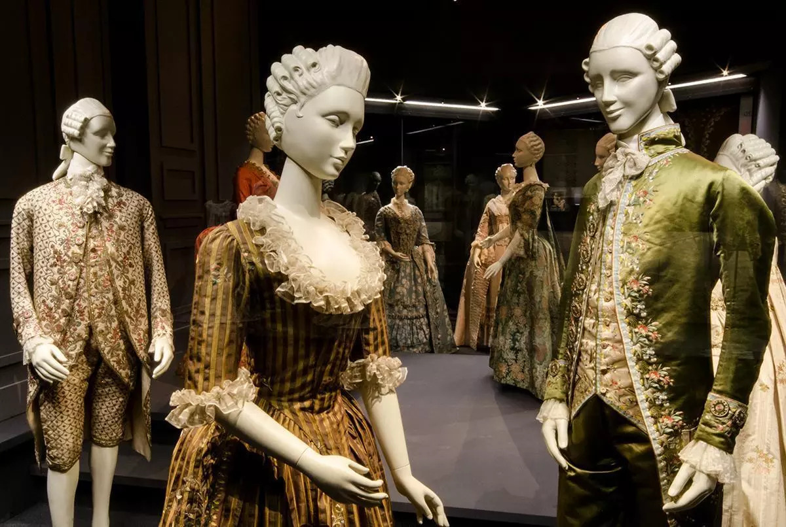
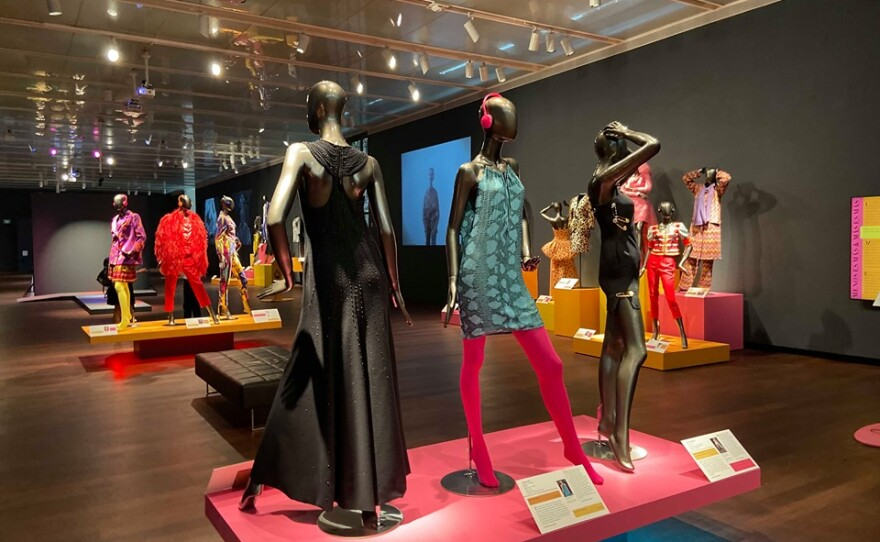
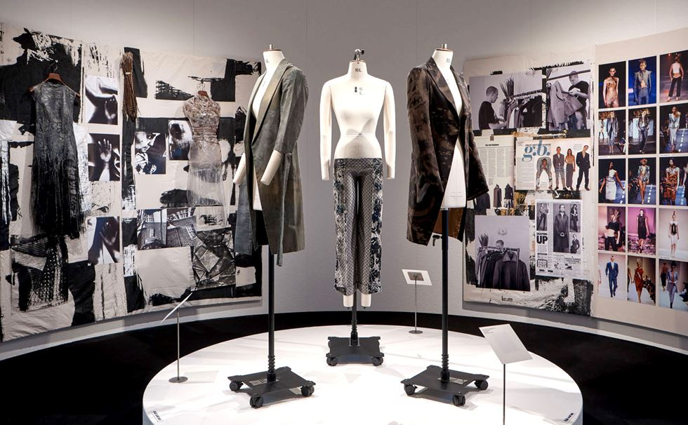
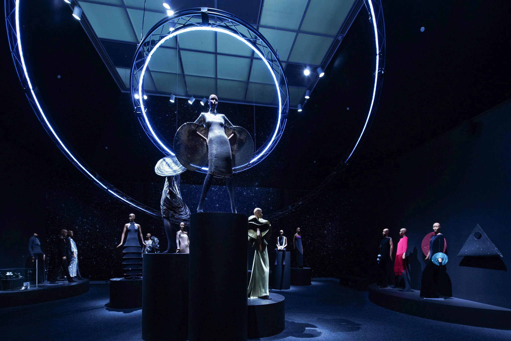

Current Exhibitions
Discover what's on view at MonoMuse. Our rotating exhibitions explore fashion across eras, cultures, and creative visions — from classic couture to the cutting edge of wearable technology. Each exhibition is thoughtfully curated to spark conversation, celebrate craft, and invite visitors to see clothing as more than what we wear. Whether you're a lifelong fashion enthusiast or simply curious, there's something new to discover with every visit.
Buy TicketsExhibition 1: European Elegance
On view: January 15 – May 30, 2026
European Elegance explores the foundations of high fashion, from classic couture houses to the craftsmanship that defined luxury style. The exhibition highlights intricate tailoring, rich textiles, and the cultural influence of European fashion capitals in shaping global trends.

Classic couture on display

90s streetwear culture
Exhibition 2: American Street Style (1990s)
On view: March 1 – August 15, 2026
American Street Style examines the bold, expressive fashion of the 1990s, where hip-hop, grunge, and youth culture redefined style. Featuring oversized silhouettes, denim, and iconic streetwear, the exhibition captures a decade where fashion became a powerful form of identity and rebellion.
Exhibition 3: Contemporary Voices
On view: April 10 – September 28, 2026
Contemporary Voices showcases modern designers who are redefining fashion today. Through experimental silhouettes, sustainable materials, and diverse perspectives, this exhibition highlights how fashion continues to evolve as both art and social commentary.

Modern fashion as art

Technology meets textile
Exhibition 4: Future Fabrics
On view: June 1 – November 15, 2026
Future Fabrics explores the intersection of fashion and technology. From 3D-printed garments to smart textiles and digital fashion, the exhibition presents innovative approaches that challenge how clothing is designed, produced, and experienced.